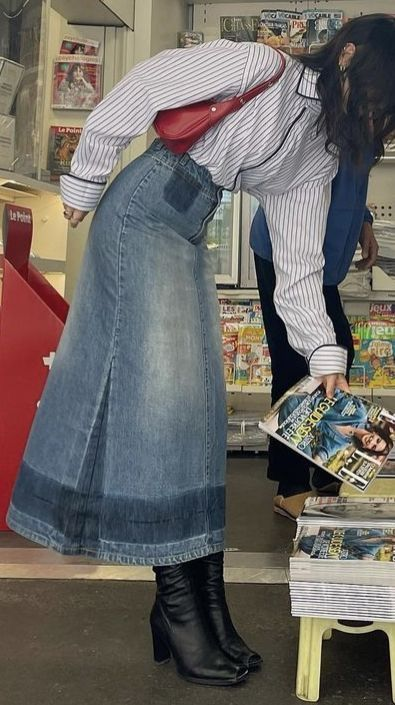
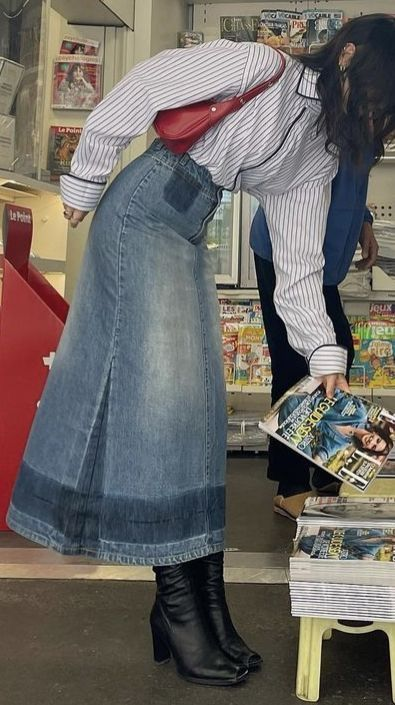

Evelin Morales
19
Edad Dorado y rosa palo
Color 03/9
Cumpleaños
Edad Dorado y rosa palo
Color 03/9
Cumpleaños
Es la controladora del grupo, quien mantiene a todos con los pies en la tierra.
Mayor miedo: Rendirse ante las exigencias de su familia y alejarse de la vida que anhela. Al igual que Cata, tiene una complicada historia familiar.
Mayor sueño: Casarse, viajar mucho y tener una vida plena.
Hobbies: Modisteria y cantar.


 
